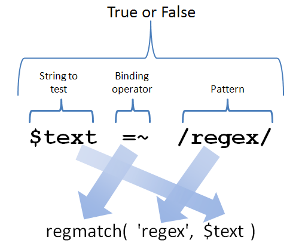

Regular Expressions: Introduction
AAHCClick on A to make all fonts on the page smaller.
Click on A to make all fonts on the page larger.
Click on HC to toggle high contrast mode. When you move your mouse over
some bold words in high contrast mode, related words are automatically highlighted. Text is shown
in black and white.
Lesson Objectives
When you complete this lesson, you will be able to:
- embed regular expressions in a Perl program.
- use regular expressions or "regexes."
- integrate regex metacharacters.
Introduction to Regular Expressions
"The way is long if one follows precepts, but short... if one follows patterns.">
-Lucius Annaeus Seneca (4 BC - 65 AD)
In this lesson we'll learn about one of the most important fundamental operations in Perl—regular
expressions. "Perl" doesn't actually officially
stand for anything, it's not an acronym. That's why it's not written as "PERL". Though Perl's author, Larry Wall, did
once suggest using the acronym "Practical
Extraction and Reporting Language." That acronym fits with Perl's reputation for being
a great language for parsing and manipulating text and unstructured data. In that
respect, the regular expression in Perl and how well it is integrated into the rest of the language, is crucial.
First of all, don't let the phrase "regular expression" scare you. The term was invented by
mathematicians before computers ever existed. We may be stuck with the label but not with
the dry mathematical theory. We'll leave that part out of our discussion of regular expressions and explain them in
such a way that mortals without math degrees can understand.
Secondly, in the same way that mathematicians and physicists like to create formulas where every character stands
for something different, like E = mc2, regular expressions are their
own separate language, where every character represents something. You write what amounts to a little program in
the regular expression language, which gets embedded in a Perl program, and when Perl runs it, it fires up
the regular expression engine to decipher and run your regular expressions.
But what do regular expressions do? They're used to find patterns in text. You can also
use them to find patterns in general data that you wouldn't consider text, but it's easier to talk
about regular expressions in terms of parsing text; that's mostly what they're used for anyway.
Speaking of simplifying our discussion, "regular expressions" is a bit of a mouthful. Since we're
going to use the term over and over, we'll use the common contraction regex.
We'll start out with tasks like determining whether the string "apple"
occurs in the text, or whether there's a vowel or a telephone number in it. Later, we'll look at more
complicated examples. The regex language includes more features than we will cover in this course,
and more than one book has been written just on that language. With all of those powerful features, the
regex language can even be used to parse programs written in languages as complicated as Perl.
Literal Matching
Let's get started with the basic type of regex, and see how to embed it in a Perl program.
Create reg_literal.pl as shown:
CODE TO TYPE : reg_literal.pl
#!/usr/bin/perl
use strict;
use warnings;
my $text = "I have three apples and four oranges";
$text =~ /apple/ and print "Found an apple\n";
$text = "I have two tomatoes and one zucchini";
$text =~ /apple/ or print "Didn't find an apple\n";
 and run it.
and run it.
INTERACTIVE TERMINAL SESSION
cold:~$ cd perl2
cold:~/perl2$ ./reg_literal.pl
Found an apple
Didn't find an apple
cold:~/perl2$
Our program found an apple in the first string we put in $text ("I have three apples
and four oranges") and didn't find an apple in the second string we put in $text ("I
have two tomatoes and one zucchini").
Let's take a closer look at this program:
OBSERVE: reg_literal.pl
#!/usr/bin/perl
use strict;
use warnings;
my $text = "I have three apples and four oranges";
$text =~ /apple/ and print "Found an apple\n";
$text = "I have two tomatoes and one zucchini";
$text =~ /apple/ or print "Didn't find an apple\n";
See how we used and to mean if and or to mean unless?
Now, imagine that Perl has a function named say, regmatch(), that returns true or
false, and it works like this:
OBSERVE: hypothetical regmatch() example
if ( regmatch( 'apple', $text ) )
{
# ...
}
The regex would be in the first argument, and the string to match it against would be in the second
one. That makes sense, right? Many languages implement regular expressions just like this. Perl,
however, introduces new syntax so that regexes can appear in the code without the clutter of words like
"regmatch" making it hard to read. That funny expression breaks down like this:

The /apple/ is the regex, and the =~ is the binding
operator, which tells Perl that the regex is to be tested against whatever appears to the left of it,
in this case, $text. It looks like some sort of assignment because of the equals sign, but
trust me, there's no assignment going on. =~ simply means, "I have a regex to my right
which is to be matched against the string to my left, and the value of the whole expression STRING =~
REGEX is true if the regex matched the string, and false if it didn't."
| WARNING | There is no actual regmatch function in Perl! I made that up
as a hypothetical equivalent to the new syntax for the sake of explanation. |
To be ruthlessly precise, technically the regular expression is apple. The slashes are
delimiters around the regular expression. But even with the power of font coloring at our
disposal, it's still awkward to refer to a regex in documentation without delimiters around it;
without them, readers would have a hard time separating the regex (which usually contains punctuation) from
the surrounding text. So now when I refer to "the regular expression,
/apple/," I trust that you understand that the regex itself is located between the slashes.
Now, what if we want to match a slash? Modify reg_literal.pl as shown:
CODE TO EDIT: reg_literal.pl
#!/usr/bin/perl
use strict;
use warnings;
my $text = "I have three apples/four oranges";
$text =~ /apples// and print "Found apples/\n";
$text = "I have two tomatoes and one zucchini";
$text =~ /apple/ or print "Didn't find an apple\n";
, and you get compilation errors. Because the slash is
treated as a delimiter, you can't match on it as well.
You can use different delimiters if you like, delimiters that follow the same rules as
qq, but if you do, you must prefix the first delimiter with the letter
m. Modify reg_literal.pl and see this for yourself:
CODE TO EDIT: reg_literal.pl
#!/usr/bin/perl
use strict;
use warnings;
my $text = "I have three apples/four oranges";
$text =~ m!apples/! and print "Found apples/\n";
$text = "I have two tomatoes and one zucchini";
$text =~ m(apple) or print "Didn't find an apple\n";
and run it.
INTERACTIVE SESSION:
cold:~/perl2$ ./reg_literal.pl
Found apples/
Didn't find an apple
cold:~/perl2$
This alternate syntax is useful when a regular expression contains a slash; using this approach,
the slash does not need to be escaped.
Structure and Execution of Regular Expressions
Now that you've seen a basic example, let's deconstruct it. Remember I said that in a regular expression,
every character had a meaning? Most characters—the vast majority—mean something very simple:
"Match this character." That's what /apple/ means: "Match an a, then match a
p, then match another p, then match an l, then match an
e." You might be tempted to think that this explanation is overkill, and
I could just have said it means, "Match apple." But it's good to be meticulous when
explaining how regular expressions work. If you're going to be a great Perl programmer, you need to learn
the basic rules of regexes inside and out.
So /apple/ causes Perl to look in the string that is bound to the regex via
=~ first for an a, scanning each character in the string from left to
right (beginning to end), until it finds an a. Looking at the first test (against the string
"I have three apples and four oranges"), the regex engine finds one when it gets to the
a in have, at which point it declares success on that character, and goes on
to the next character in the regex, which says that the next thing in the string must be a p.
But it isn't. So Perl undoes the match of the a (this action is known as
backtracking), and moves forward through the string again, looking for another a. When
it next finds one (in apples), it tests each succeeding character in the regex against the
next character in the string, and if each of them match in turn, Perl gets to the end of the regex, and
is able to return a true value from the expression.
Some characters do not match literally in regexes, which make regexes even more interesting and
powerful. Such characters are known as regex metacharacters:
OBSERVE: Regex Metacharacters
If you want to match any of those literally, you have to escape them with a backslash. You'll learn what
they do later, but for now, look at that list closely, and remember that those
characters are special. In addition to those characters, the $ character has special meaning when
it's the last character of a regular expression. A regex is like a double-quoted string, so variables
interpolate within it. So a $ that isn't at the end of the regex is assumed to be the
start of a scalar variable, and an @ is assumed to be the start of an array variable.
A slash (/) character in the middle of a regex needs to be escaped with a backslash (\) if
the regex delimiter is a slash. Otherwise, backslashes obey the same rules that they do in double-quoted
strings, with a few exceptions that we will discuss later.
That information dump about metacharacters was for those of you who like to know the rules up front. If
you're fretting about how to remember all of that, relax; we'll do plenty of examples with
explanations to make sure that you get (and keep) all of it.
The /i Modifier
So far, we haven't done anything with regular expressions that couldn't be done with the
index() function. That's about to change. Certain letters typed in after
a regex (after the last slash or delimiter) are called modifiers because they
modify how the regex engine interprets the regex. The first modifier we'll look at is the /i modifier.
(Technically, it's the i modifier; the / is the
delimiter, but we'll stick
with the convention and call it the /i modifier.)
The i modifier tells the regex engine to ignore the case of letters in the regex. So
/apple/i will still match "apple", but will also match "APPLE",
"Apple", "ApPlE" and all the other combinations of upper and lower case.
Another reason we usually write regexes with the delimiters around them here is to make it clear that we are
applying a modifier like /i to the regex. (There is, in
fact, a way to place something between the slashes that has the same effect as /i, but it is so
hideous that I am not going to show it.)
Modify reg_literal.pl as shown:
CODE TO EDIT: reg_literal.pl
#!/usr/bin/perl
use strict;
use warnings;
my $text = "I HAVE THREE APPLES AND FOUR ORANGES";
$text =~ /apple/i and print "Found an apple\n";
$text = "I have two tomatoes and one zucchini";
$text =~ m{apple}i or print "Didn't find an apple\n";
and run it. Look over the use and effect of a
modifier with the default delimiters and different delimiters.
That program didn't require the use of {} alternate delimiter syntax, but some programmers
do so routinely because they like the way it looks. The alternate delimiter syntax is handy when your regex contains
slashes. Modify reg_literal.pl as follows:
CODE TO EDIT: reg_literal.pl
#!/usr/bin/perl
use strict;
use warnings;
my $text = "I HAVE THREE APPLES AND FOUR ORANGES";
$text =~ /apple/i and print "Found an apple\n";
$text =~ /24\/5\/1819/i and print "Found Queen Victoria's birthday\n";
$text = "I have two tomatoes and one zucchini";
$text =~ m{apple}i or print "Didn't find an apple\n";
$text =~ m{7/7/1776}i or print "Didn't find American Independence Day\n";
Do you see how using the default delimiters of // requires escaping slashes inside of the
regular expression, which makes it harder to read? We call that leaning toothpick syndrome.
More Regex Examples
Let's get comfortable with what we've learned so far. Create reg_literal2.pl as shown:
CODE TO TYPE: reg_literal2.pl
#!/usr/bin/perl
use strict;
use warnings;
foreach my $text ( qw(Matt bats the ball at Atticus) )
{
print qq{"$text" };
if ( $text =~ /at/ )
{
print "matches";
}
else
{
print "does not match";
}
print " /at/\n";
}
and run it:
INTERACTIVE TERMINAL SESSION
cold:~/perl2$ ./reg_literal2.pl
"Matt" matches /at/
"bats" matches /at/
"the" does not match /at/
"ball" does not match /at/
"at" matches /at/
"Atticus" does not match /at/
cold:~/perl2$
Do you understand why the program produces that output?
For another example, create reg_literal3.pl as shown:
CODE TO TYPE: reg_literal3.pl
#!/usr/bin/perl
use strict;
use warnings;
foreach my $text ( "Stoplight", "Red Light", "Green means go" )
{
print qq{"$text": };
if ( $text =~ /sto/i && $text =~ /top/ )
{
print "matches AND clause\n";
}
elsif ( $text =~ /light/ || $text =~ /light/i )
{
print "matches OR clause\n";
}
else
{
print "matches neither clause\n";
}
}
and run it:
INTERACTIVE TERMINAL SESSION
cold:~/perl2$ ./reg_literal3.pl
"Stoplight": matches AND clause
"Red Light": matches OR clause
"Green means go": matches neither clause
cold:~/perl2$
Do you understand why that output is printed?
Finally, let's try an example of a primitive implementation of the popular Unix grep
program. Create reg_grep.pl as shown:
CODE TO TYPE: reg_grep.pl
#!/usr/bin/perl
use strict;
use warnings;
my $regex = shift;
while ( $_ = <> )
{
print if $_ =~ /$regex/;
}
and run it, using one of your source files as
input:
INTERACTIVE TERMINAL SESSION
cold:~/perl2$ ./reg_grep.pl light ./reg_literal3.pl
foreach my $text ( "Stoplight", "Red Light", "Green means go" )
elsif ( $text =~ /light/ || $text =~ /light/i )
cold:~/perl2$
This program takes, as its first argument, a regular expression. We can interpolate a
scalar inside a regex (as I said, a regex behaves like a double-quoted string for the most part); the
result is used as the regex. The remaining arguments are used as filenames to open (if we didn't supply
any, it would work on standard input). The matching lines are printed. We use the default argument ($_)
to print.
Congratulations, you've just gotten started on possibly the single most important topic in Perl! And
there's a lot more to come!
Once you finish with the lesson, go back to the syllabus page by clicking on the page tab above and do
the assignments.